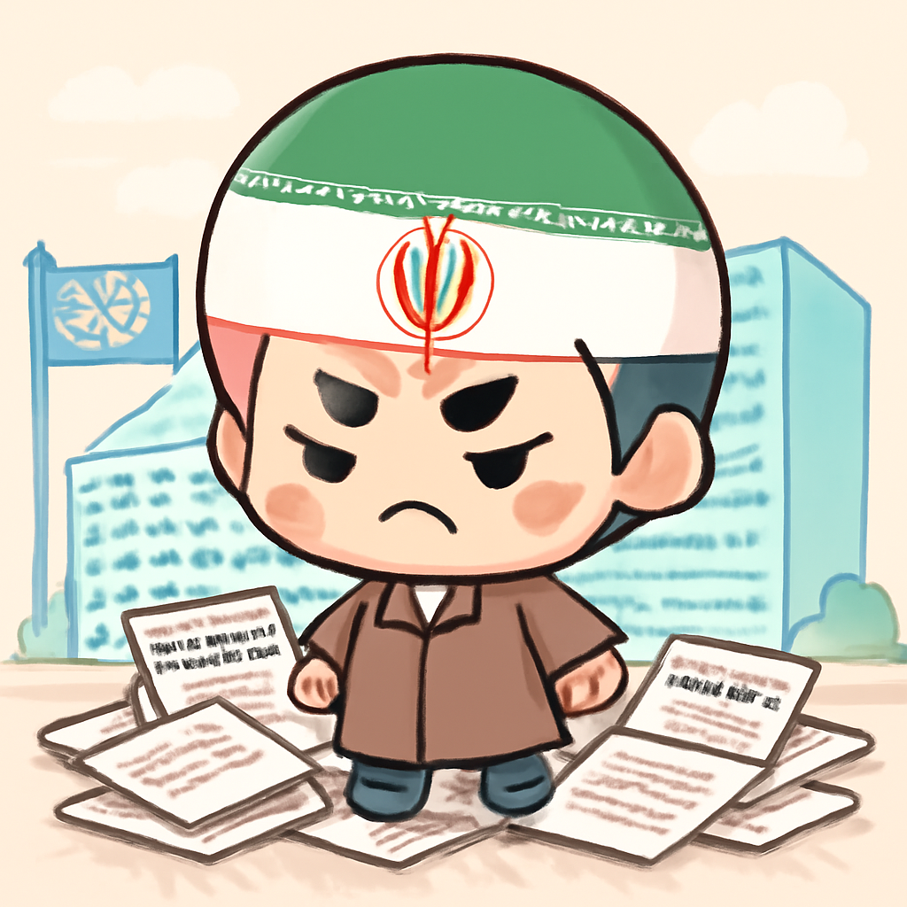
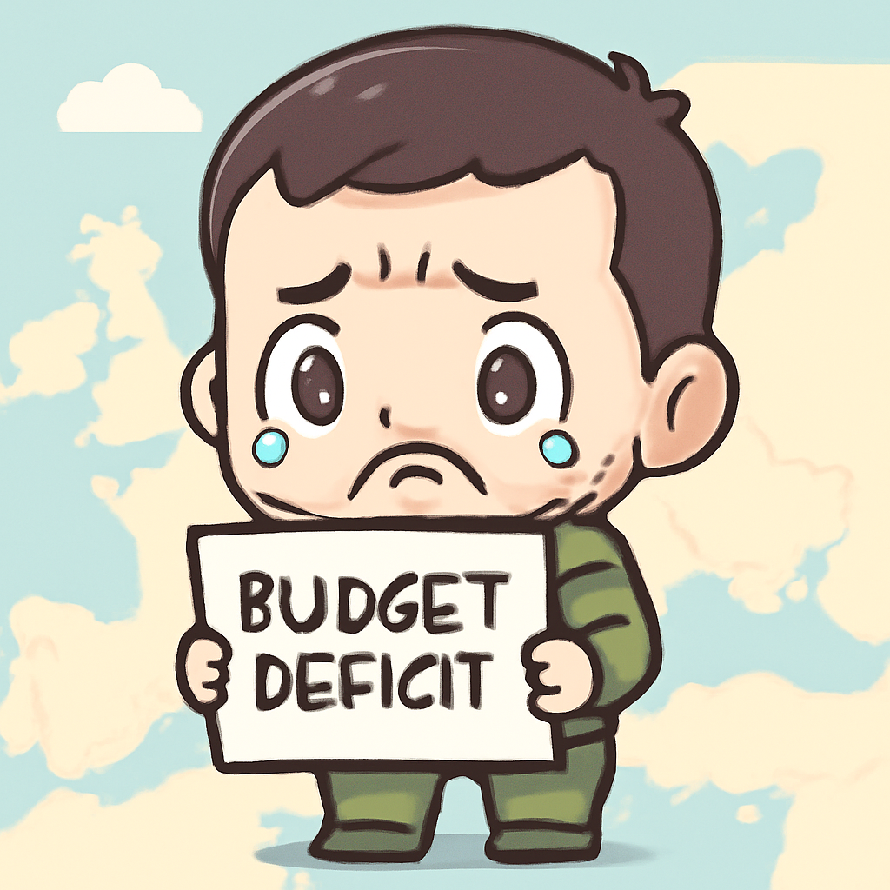

其一 · 英國倫敦 · 歐洲對以色列施加壓力
英國與法國聯手施壓以色列，挑戰美國立場。
在英國倫敦，英國和法國的領導人攜手對以色列施加壓力，反對以色列的新定居點計劃，這一舉動可能會激怒美國。這不僅顯示了歐洲在中東問題上日漸獨立的立場，也可能影響未來的國際關係。看來，歐洲的「團結」不再是口號，而是實際行動！
🔗 原始新聞 ↗
2026-09-10 · 以古觀今，以笑抗愁
英國與法國聯手施壓以色列，挑戰美國立場。
在英國倫敦，英國和法國的領導人攜手對以色列施加壓力，反對以色列的新定居點計劃，這一舉動可能會激怒美國。這不僅顯示了歐洲在中東問題上日漸獨立的立場，也可能影響未來的國際關係。看來，歐洲的「團結」不再是口號，而是實際行動！
🔗 原始新聞 ↗
美國和胡塞武裝衝突，原油價格飆升至100美元。
在美國華府，隨著美國對伊朗油輪的攻擊，布倫特原油價格首次突破100美元大關。這波漲價可能會影響全球能源市場，讓許多國家的經濟感到壓力。油價上升，可能讓開車族的錢包又要「減肥」了！
🔗 原始新聞 ↗
德國總理與極右派領袖激烈辯論，移民政策成焦點。
在德國柏林，總理梅茲與極右派的魏德爾展開激烈辯論，針對移民政策的爭議引發了社會的廣泛關注。梅茲形容魏德爾的政策為「民族清洗」，顯示出德國政治的緊張氛圍。看來，政治也需要一點「火花」來吸引眼球！
🔗 原始新聞 ↗
伊朗遭聯合國安理會譴責，核計劃引起緊張。

在伊朗德黑蘭，伊朗因核計劃未遵守協議而被聯合國安理會譴責，這使得本來就緊張的國際關係雪上加霜。伊朗指責美國和以色列的空襲擾亂了檢查工作，這情勢可能會進一步升級。看來，核問題總是讓人心頭一緊！
🔗 原始新聞 ↗
烏克蘭意外出現270億美元預算赤字，挑戰歐洲支持。

在烏克蘭基輔，總統澤倫斯基宣布，國家面臨270億美元的預算赤字，這讓許多歐洲國家感到震驚。這一消息不僅提醒大家戰爭的成本，還挑戰了歐洲對烏克蘭的支持。看來，烏克蘭的經濟也在「戰鬥」中不斷變化！
🔗 原始新聞 ↗